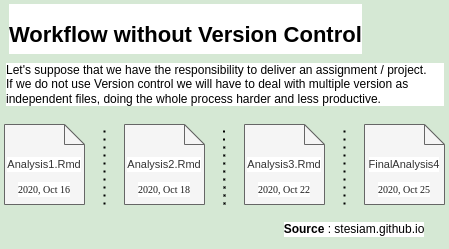
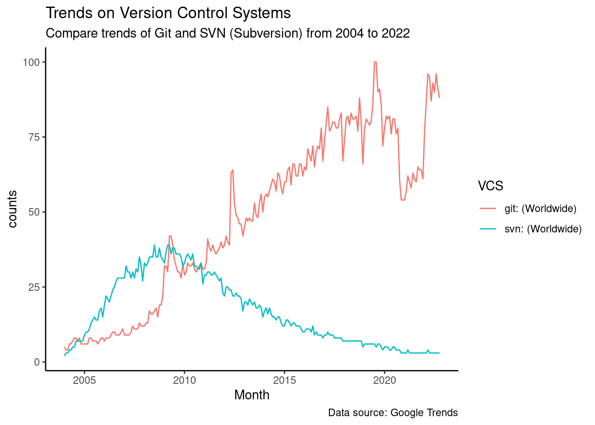
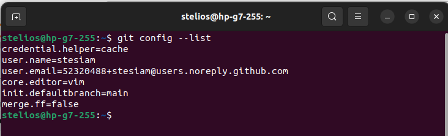

An article that brings together some configuration setttings of Git. A beginner’s approach to Git.
Git
Author
stesiam
Published
November 4, 2022
Introduction
What is Version Control System
A Version Control System (VCS) is a way to manage and track code changes. As we build an application, we add functions, change frontend features, fix bugs. We will need to edit the code many times. So we need a way to manage these changes. The tracking of every change to our code is the key point of VCS.

Workflow without Version Control
Some popular Version Control Software are the following :
Git
Apache Subversion (SVN)
Mercurial
Bazaar
Popularity of VCS
Having seen what a VCS is, it would be interesting to see which one is the most widely used. In order to study which VCS is the most popular, I pulled data from Google Trends.
Code
ggplot(data =trends_vcs_tidy, aes(x=Month, y =counts))+geom_line(aes(color =VCS))+labs(title ="Trends on Version Control Systems", subtitle ="Compare trends of Git and SVN (Subversion) from 2004 to 2022", caption ="Data source: Google Trends")+theme_classic()

The figure above makes clear the dominance of Git as a version control tool. Also, we notice that Subversion (SVN) was quite popular and a capable competitor of Git until 2010. After that period there is a continuous decline in SVN’s interest and the exact opposite for Git. Today, in 2022, the difference is chaotic between them.
Benefits
Why should I use VCS ?
Easy transition between versions
More productive, Time saver if a version produces error
Enables cooperation with other developers (especially with a hosting service like GitHub).
Drawbacks
Ok. There are some good points. But where is the catch ?
We are adding a new tool to our workflow (Git)
Kind of steep learning curve.
Hosting platforms
We have mentioned some of the most important programs for managing the code of an application. Of course, there are not a few times when we want to save the progress of our application somewhere else to enable developers communicate their code commits to each other. The solution is some code hosting services. The best known are GitHub, GitLab and Bitbucket. Finally, in case none of the options outlined earlier satisfy us, there is also the self-host solution. For example, if I had concerns about the terms of the above services, I could host Gitea on my own server or even to rent a cloud server. That way I would have my own “GitHub”, without depending on a third party service.
Git settings
Set up Name & Email
So, you decided to start Git without setting Name and Email?
You may think of it again. In case you try to commit without setting a Name and email. Git will not commit your changes, without prior setting those.
If you are planning to host your repository on GitHub, you may want to hide your casual email. In that case GitHub offers a noreply email for this purpose. You can read more here.
Set editor
A part that I considered a little bit hard is editing Git commits. By default, Ubuntu has installed Vim, so this was my first editor for my commits. I think this choice is good if you are writing short commit messages or you are acquainted with Vim options/shortcuts. In case you are in a hurry, the use of an alterantive (most familiar) IDE is justified.
In October of 2020, GitHub announced that will change the default name of initial branch from master to main.
The default branch name for new repositories is now main. GitHub.blog - October 1,2020
Therefore, it would be good to make this change in our local environment as well, as follows :
Terminal
git config --global init.defaultBranch main
Merge method
One change that is not exactly necessary but helps me is to change the defaults regarding merge. Let’s say that I want to add a new feature in my application. Most of the times I will make a branch on which I will start developing my new feature. When I implement this function and I’m ready to merge my changes into the main code there are two situations.
1. There are commits to main branch
The predefined action is to merge. The branch is visible. Our setting has not any effect on this case.
2. There are no commits to main branch
The predefined action of Git is to take the feature branch and paste it on the top of main branch. By making the setting above I am telling Git to keep the branch and react like the first case. The branch is visible again.
With simple words, I am forcing Git to keep branch, regardless of changes to main branch.
Terminal
git config --global merge.ff false
Auto-sign your commits
In a previous article we saw how to sign our commits as well as the reasons for doing so. In short, we made a PGP key which we added to our GitHub account. From that moment to sign my commits I had to write git commit -S -m "something", instead of git commit -m "something". Of course, that method is a little bit problematic. It is a little bit longer, little different in comparison to what I am used to type and most importantly I may forget some times to sign it manually. The last one happened to me A LOT. Thankfully, there is a way to be carefree about that anymore. I can set git config in a way that my commits will be signed automatically.
Warning
If you do not have already a GPG key, you can have a look in this guide in order to generate one. Also, depending your hosting platform for your code, you can link your GPG with your account :
Making the above settings, we can have a summary of those with the corresponding command:
Terminal
git config --list
Here is the output on my machine :

Output of git-config command
The image above sums up the settings of Git. Although, each user has different needs and for that reason it would be good in case you want to learn more about git config to see their documentation page.
To sum up
A summary of the commands we used to configure Git :
Of course you can access your git config file on your Home directory (at least on Ubuntu installation).
Warning
Note that the .gitconfig file, which contains our settings, may not be visible in the Home directory. In general, files whose names begin with a period are not displayed. However, if everything has been done correctly, it’s probably there. For example, in Ubuntu you should choose to show hidden files.
In case you open that file you will see probably something like the above :